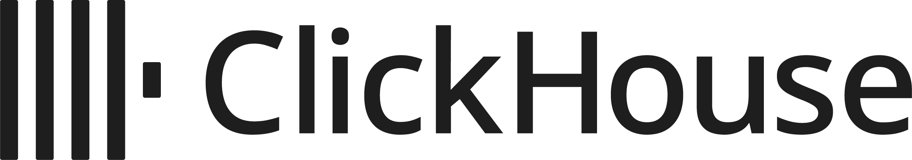
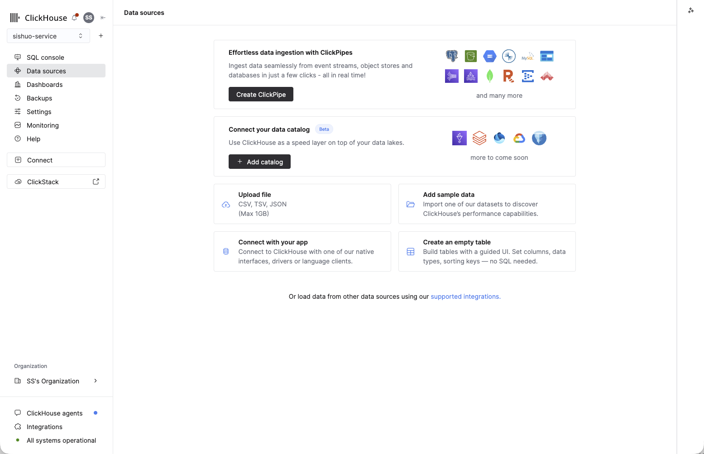
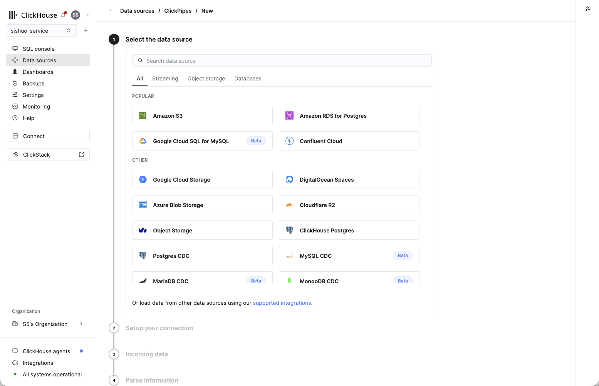
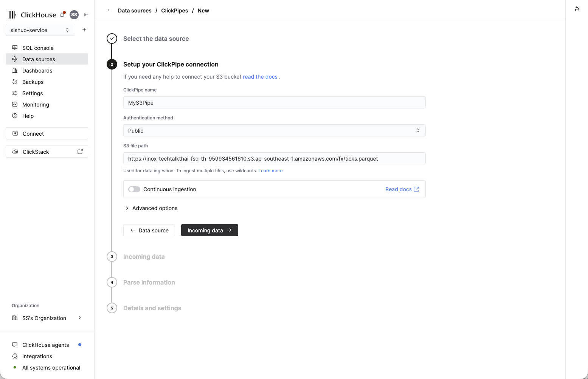
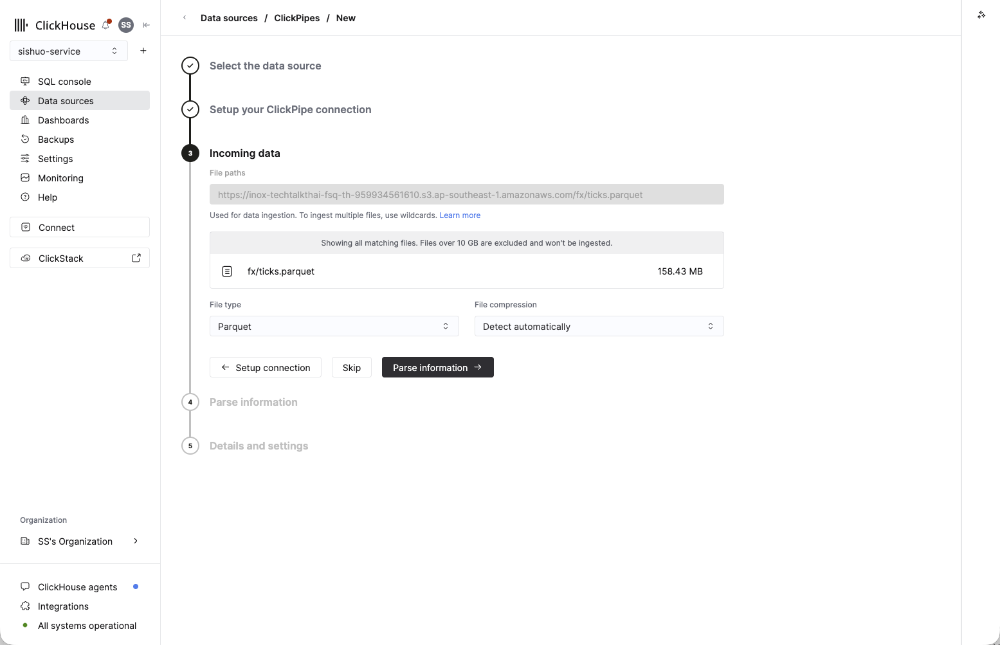
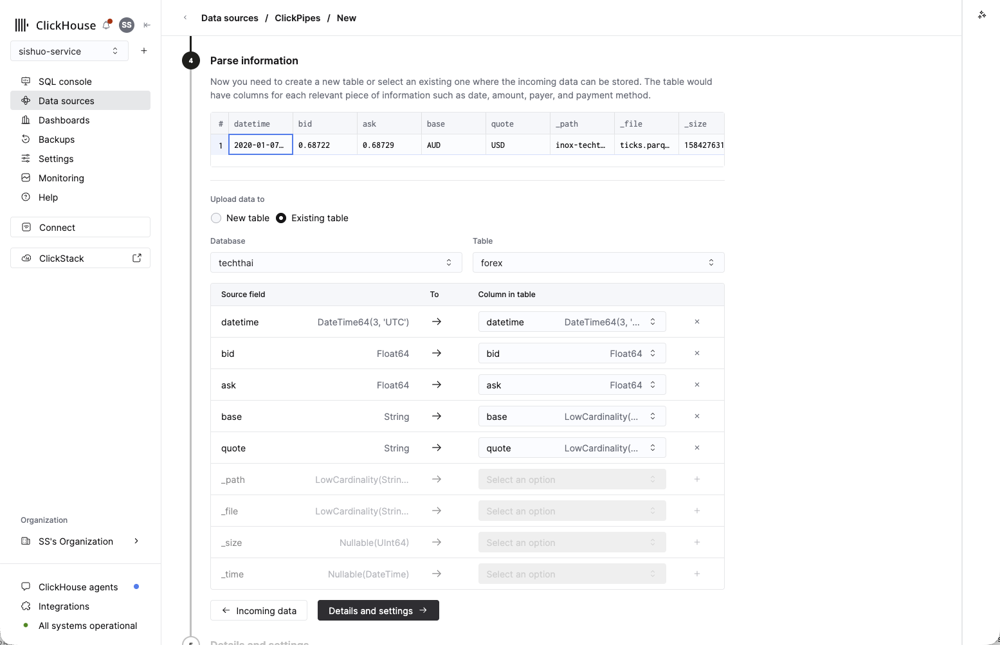
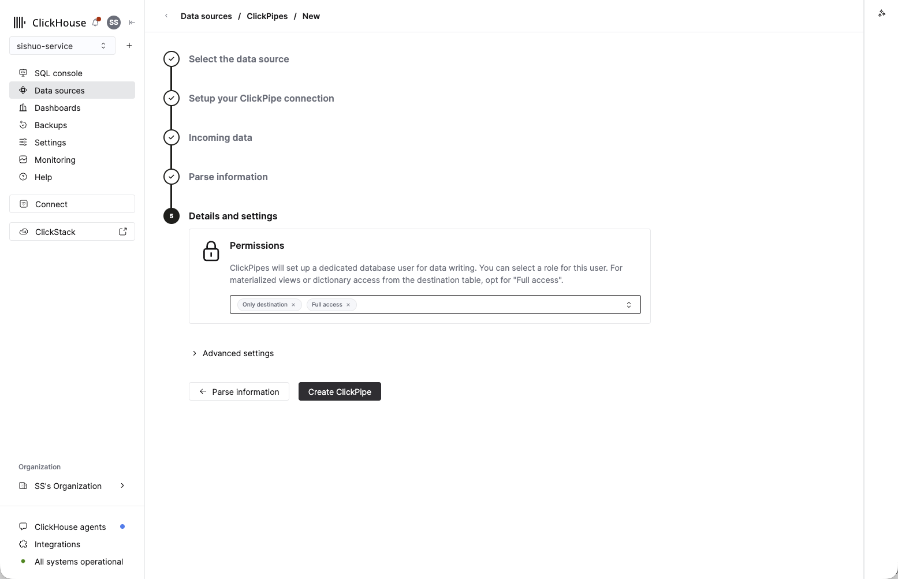
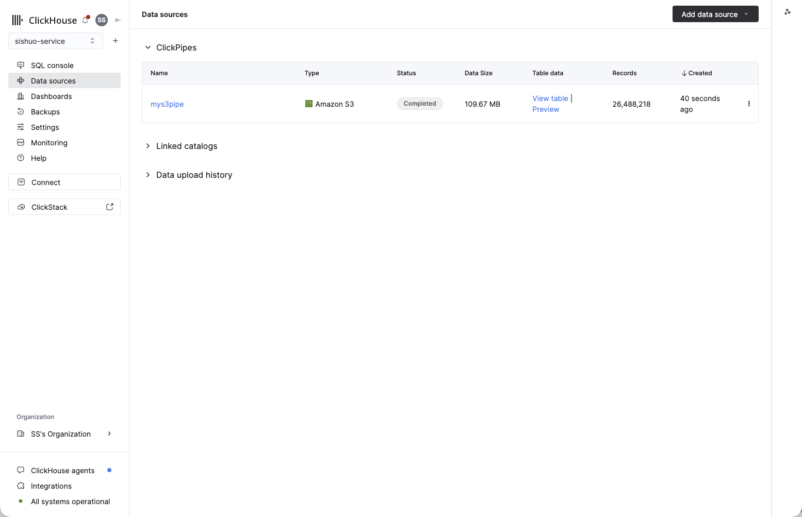
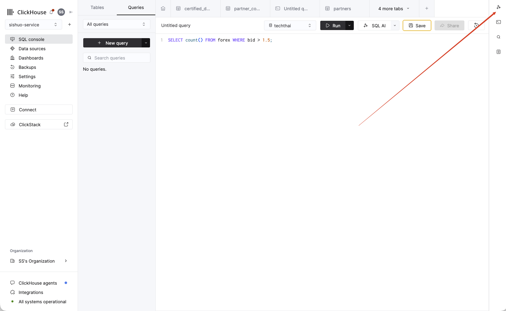
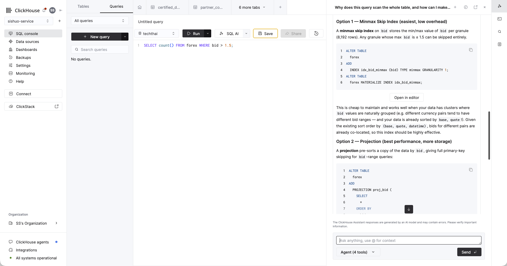

Hands-On Participant Guide · Follow along at your own pace
In the next 90 minutes you'll stand up your own ClickHouse Cloud service, load ~26.5 million foreign-exchange ticks from public cloud storage, run real market-analytics queries on it, and then let AI write and fix SQL for you.
Everything is copy-paste. Each query block has a Copy button — paste it into the SQL Console and run it. Green boxes tell you what you should see, so if you fall behind you can always catch up on your own. Let's go.
You need a running service before you can load data. If you already have one, skip ahead.
ap-southeast-1 Singapore) for the snappiest experience.First you'll create an empty table to hold the forex ticks. Open the SQL Console, paste the statement below, and run it.
-- 26.5M forex ticks (12 pairs incl. gold, Jan 2020); base+quote+time lead the sort key
CREATE TABLE forex
(
datetime DateTime64(3, 'UTC'), -- millisecond quote timestamp
bid Float64,
ask Float64,
base LowCardinality(String), -- e.g. 'EUR', 'XAU' (gold)
quote LowCardinality(String), -- e.g. 'USD', 'JPY'
pair String ALIAS concat(base, '/', quote), -- handy label, computed on read
spread Float64 ALIAS ask - bid, -- bid/ask spread
mid Float64 ALIAS (bid + ask) / 2 -- mid price
)
ENGINE = MergeTree
ORDER BY (base, quote, datetime);Why this shape? base and quote lead the ORDER BY (the table's sort key). That means filtering by a currency pair — and a time range — lets ClickHouse skip almost all the data. You'll see exactly how much this matters in the last query of Step 4.
The data lives in a public S3 bucket, so no keys or credentials are needed — you just point at the URL. The transfer runs server-side from S3 to ClickHouse, so it does not stream 26.5 million rows through your laptop or depend on the venue Wi-Fi.
You'll load the same 26.5M ticks two different ways so you can see both. Method 1 is ClickPipes, the managed, click-through pipeline you'd use in production. Method 2 is a single SQL line — the fastest way to get data in during a demo. Do them in order; a TRUNCATE in between keeps the row count clean.
ClickPipes is a fully managed ingestion service: point it at object storage or a stream and it keeps loading, no connector to build. Here's the whole flow.


https://inox-techtalkthai-fsq-th-959934561610.s3.ap-southeast-1.amazonaws.com/fx/ticks.parquetLeave Continuous ingestion off (this is a one-time file), then click Incoming data →.

fx/ticks.parquet at 158.43 MB. Confirm File type → Parquet and leave compression on Detect automatically, then click Parse information →.
default), and set Table → forex. Check that the source fields (datetime, bid, ask, base, quote) line up with the matching columns — they should map automatically. Leave the extra _path / _file / _size fields unmapped. Then click Details and settings →.
techthai database — use whichever one holds your table.)

Check what loaded. Run this in the SQL Console:
-- expect 26,488,218 ticks across 12 pairs
SELECT count() AS ticks, uniqExact(concat(base,'/',quote)) AS pairs FROM forex;s3() one-liner — fastest in a demoNow load the exact same data with a single SQL statement, straight from the public file. First empty the table so the count doesn't double, then insert:
-- clear the rows ClickPipes just loaded so we don't double up
TRUNCATE TABLE forex;
-- load all ~26.5M ticks from the public S3 file in one line (server-side)
INSERT INTO forex
SELECT * FROM s3('https://inox-techtalkthai-fsq-th-959934561610.s3.ap-southeast-1.amazonaws.com/fx/ticks.parquet', NOSIGN, 'Parquet');
-- and check again (expect 26,488,218)
SELECT count() AS ticks, uniqExact(concat(base,'/',quote)) AS pairs FROM forex;NOSIGN means "no credentials" — that's all it takes to read a public bucket. SELECT * just works because the table's column order matches the file.
s3() function — when to use whichBoth got the same data in. The difference is what happens after the first load — whether you want a managed, ongoing pipeline or a quick one-shot read.
| ClickPipes | s3() table function | |
|---|---|---|
| What it is | A fully managed ingestion service you set up in the console | A SQL function you call inline in a query |
| Best for | Production & ongoing loads you want to run and forget | Quick one-off loads, ad-hoc exploration, scripts |
| Ongoing / new files | Can keep watching a bucket or stream and load new data continuously | One-shot — reads only what's there each time you run it |
| Setup | Guided UI, no SQL needed | A single INSERT … SELECT statement |
| Monitoring & retries | Built in — status, error handling and retries in the console | None — you re-run it yourself if it fails |
| Sources | Many: S3, GCS, Azure, Kafka and other streams, Postgres/MySQL CDC, and more | Object storage only (siblings: gcs(), azureBlobStorage(), url()) |
Rule of thumb: reach for ClickPipes when data keeps arriving and you want it managed; reach for s3() when you just want to pull a file in right now. Today you used the one-liner to get querying fast — now let's query it.
These are ClickHouse's "functions that replace a page of SQL." Paste each block, run it, and read the green box for what to expect. All of them run against the forex table you just loaded.
How many distinct quote timestamps are in 26.5M ticks? Three functions answer the same question with different trade-offs. Run them one at a time and watch the timer in the query stats — running them separately is the whole point.
-- Approximate count of distinct timestamps (HyperLogLog)
SELECT uniq(datetime) AS distinct_ts FROM forex;-- Exact count — precise, but scans every value
SELECT uniqExact(datetime) AS distinct_ts FROM forex;-- Adaptive + tunable accuracy vs memory
SELECT uniqCombined(datetime) AS distinct_ts FROM forex;uniq returns in ~0.2 s, uniqExact takes ~3 s (about 17× slower) for the precise number, and uniqCombined lands within ~0.4% in well under a second. At billions of rows, that gap is the difference between instant and a coffee break.
The most actively quoted pairs — no GROUP BY / ORDER BY / LIMIT needed:
-- One row: an array of the 8 most actively quoted pairs (by tick count)
SELECT topK(8)(pair) AS most_active FROM forex;XAU/USD, tops it). topK collapses the whole table into that ranked list in one pass — it stands in for a GROUP BY … ORDER BY count() DESC LIMIT 8.
Daily open / high / low / close for gold — the bread-and-butter market query:
-- One row per day: gold (XAU/USD) open, high, low, close — a candlestick chart
SELECT
toDate(datetime) AS day,
argMin(bid, datetime) AS open, -- bid at the day's first tick
max(bid) AS high,
min(bid) AS low,
argMax(bid, datetime) AS close -- bid at the day's last tick
FROM forex
WHERE base = 'XAU' AND quote = 'USD'
GROUP BY day
ORDER BY day;argMin(bid, datetime) is the bid at the day's first tick (the open) and argMax the last (the close) — no window functions, no self-joins. Watch gold climb from ~1,520 to ~1,610 across the month.
The bid/ask spread is a liquidity gauge — and averages hide the tail, so use percentiles:
-- One row per pair: median and 99th-percentile bid/ask spread (tighter = more liquid)
SELECT
pair,
round(quantile(0.5)(ask - bid), 6) AS median_spread,
round(quantile(0.99)(ask - bid), 6) AS p99_spread
FROM forex
GROUP BY pair
ORDER BY median_spread ASC;quantile is computed approximately in one pass — no sorting the whole column.
Average spread during active vs quiet trading hours, side by side, in a single scan:
-- One row per pair: avg spread during the active window vs quiet hours
SELECT
pair,
count() AS ticks,
round(avgIf(ask - bid, toHour(datetime) BETWEEN 7 AND 20), 6) AS spread_active,
round(avgIf(ask - bid, toHour(datetime) NOT BETWEEN 7 AND 20), 6) AS spread_quiet
FROM forex
GROUP BY pair
ORDER BY ticks DESC;-If combinator bolts a condition onto any aggregate: avgIf(x, cond) averages x only where cond is true — no two-pass query, no CASE WHEN. Nearly every aggregate takes it (countIf, sumIf, quantileIf, …).
argMaxThe most recent quote for every pair, in one pass:
-- One row per pair: the latest quoted bid and the timestamp it was seen
SELECT
pair,
argMax(bid, datetime) AS last_bid,
max(datetime) AS as_of
FROM forex
GROUP BY pair
ORDER BY pair;argMax(bid, datetime) returns the bid from the row with the greatest datetime — the everyday "last price / latest status" query, without a window function or self-join.
Same query shape — count the ticks matching a condition — but one filter hits the sort key and the other doesn't. First, run both counts:
-- Optimized: base+quote ARE the leading sort key — the index skips to that pair
SELECT count() FROM forex WHERE base = 'XAU' AND quote = 'USD';
-- Non-optimized: bid is NOT in the sort key — no index, scans all 26.5M ticks.
-- (cache off so the full scan shows on every run)
SELECT count() FROM forex WHERE bid > 1.5
SETTINGS use_query_condition_cache = 0;count() is fast either way. The real difference is how much data each one has to touch. To actually see it, ask ClickHouse to show its plan with EXPLAIN indexes = 1, which reports how many granules (blocks of ~8,192 rows) it will read:
-- Optimized: the primary index skips straight to the XAU/USD rows
EXPLAIN indexes = 1
SELECT count() FROM forex WHERE base = 'XAU' AND quote = 'USD';
-- Non-optimized: bid isn't in the sort key, so nothing can be skipped
EXPLAIN indexes = 1
SELECT count() FROM forex WHERE bid > 1.5;Indexes → PrimaryKey section shows only a slice of granules selected — about 492 / 3,234 (~16K rows). In the non-optimized plan there's no index to apply, so it reads 3,234 / 3,234 granules — every single row. Same query shape, wildly different work. The lesson: put the columns you filter on most at the front of your ORDER BY.
WHERE bid > 1.5 query on your clipboard — you'll hand it to the AI in the next step.
ClickHouse Cloud has a built-in co-pilot, the ClickHouse Assistant, right in the SQL Console. It knows ClickHouse functions and best practices — not generic SQL.

SELECT count() FROM forex WHERE bid > 1.5;bid isn't in the sort key), then proposes concrete ClickHouse fixes with ready-to-run SQL: a lightweight minmax skip index on bid, or a projection that keeps a copy of the data pre-sorted by bid.bid isn't in the sort key, so nothing can be pruned — then offers ClickHouse-specific fixes, each with copy-paste ALTER TABLE SQL and an "Open in editor" button. Not generic advice — it reaches for the exact features ClickHouse gives you (skip indexes, projections).

bid — each with ready-to-run ALTER TABLE SQL and an Open in editor button.ClickHouse Agents is the Claude-powered agent platform (currently in public beta). It answers questions in natural language — generating the SQL, running it, and drawing a chart. Open it from the SQL Console, or go directly to ai.clickhouse.cloud, and point it at the service containing the data you just loaded.
Try these, one at a time:
Watch it generate the SQL, run it, and produce a visualization — then ask it a question of your own.
Want to feel the speed? Run a small dashboard on your own laptop that queries the forex table in your ClickHouse Cloud service. It draws an interactive candlestick + volume chart, and every time you change a filter it shows the ClickHouse query time and how many rows were scanned — usually a few milliseconds. That's the whole point: change the pair, drag the date range, and the data comes back instantly.
If you don't already have it, install Docker Desktop and start it. It includes the docker compose command you'll use below. Check it's running:
docker --versionClone the workshop repository and move into the dashboard folder:
git clone https://github.com/ClickHouse/ClickHouse_Demos.git
cd ClickHouse_Demos
git switch build-workshop-v1
cd workshops/RTA-mini-workshop/dashboardCopy the template to a real .env file, then open it in any text editor and fill in your service's details:
cp .env.example .env
# now edit .env and fill in the values belowFind these in the Cloud console under Connect (left menu) → HTTPS:
| Variable | What to put |
|---|---|
| CLICKHOUSE_HOST | e.g. abc123.ap-southeast-1.aws.clickhouse.cloud — no https://, no port |
| CLICKHOUSE_PORT | 8443 |
| CLICKHOUSE_USER | default |
| CLICKHOUSE_PASSWORD | the password you set when you created the service |
| CLICKHOUSE_DATABASE | the database holding forex (usually default) |
| CLICKHOUSE_SECURE | true |
Build and start the container. The first run downloads the base image and installs dependencies (a minute or two); after that it's instant.
docker compose up --buildWhen you see it listening on port 8000, open http://localhost:8000 in your browser. Stop it later with Ctrl-C.
.env (host with no https:// and no port; port is 8443) and make sure your forex table is loaded. Full setup notes and troubleshooting are in the dashboard's README.md.
uniq*, topK, argMin/argMax, quantile, the -If combinators — is documented at clickhouse.com/docs.forex table loaded (Step 3 sanity check).